Practical Considerations
CAS Deep Learning - Computer Vision (Part1)
Overview
- Ein Rezept
- Daten
- Baselines
- Overfit
- Regularisation
- Tuning
- Squeeze
Ein Rezept
Leaky Abstraction
Silent Failure
Das Trainieren von Neuronalen Netzwerken fails silently!
1 - Daten
1) Eins werden mit den Daten
Genaues Inspizieren der Daten!
Camera Traps: Fehler
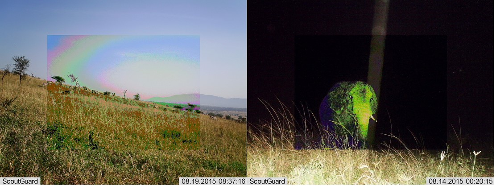
Camera Traps: Schwierigkeiten
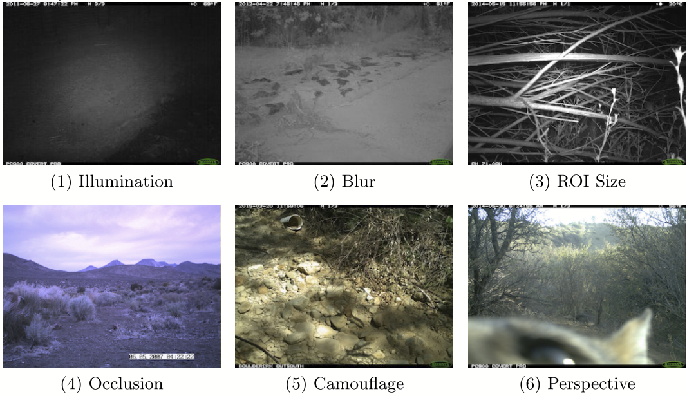
Seltene Klassen
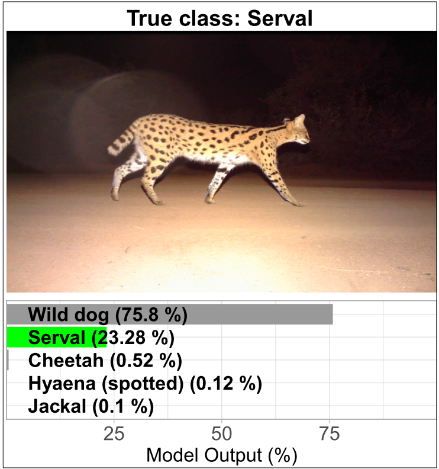
Mehrere Klassen
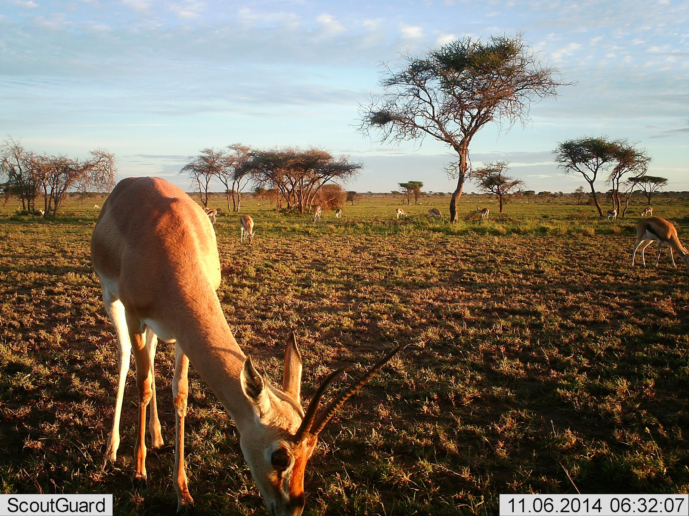Beispiele einem Bild aus einer Kamerafalle mit verschiedenen Spezies.
2 - Baselines
2) Baselines
Evaluierungs-Pipeline, Metiken, Experiment-Tracking und Baseline Modell.
ML-Prozess
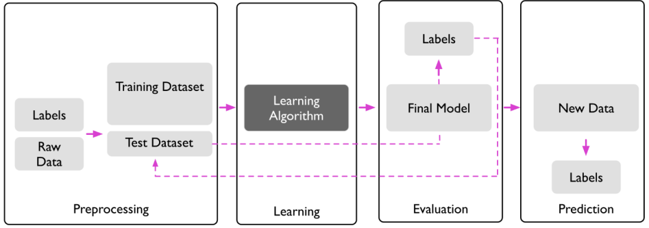
Experiment Tracking
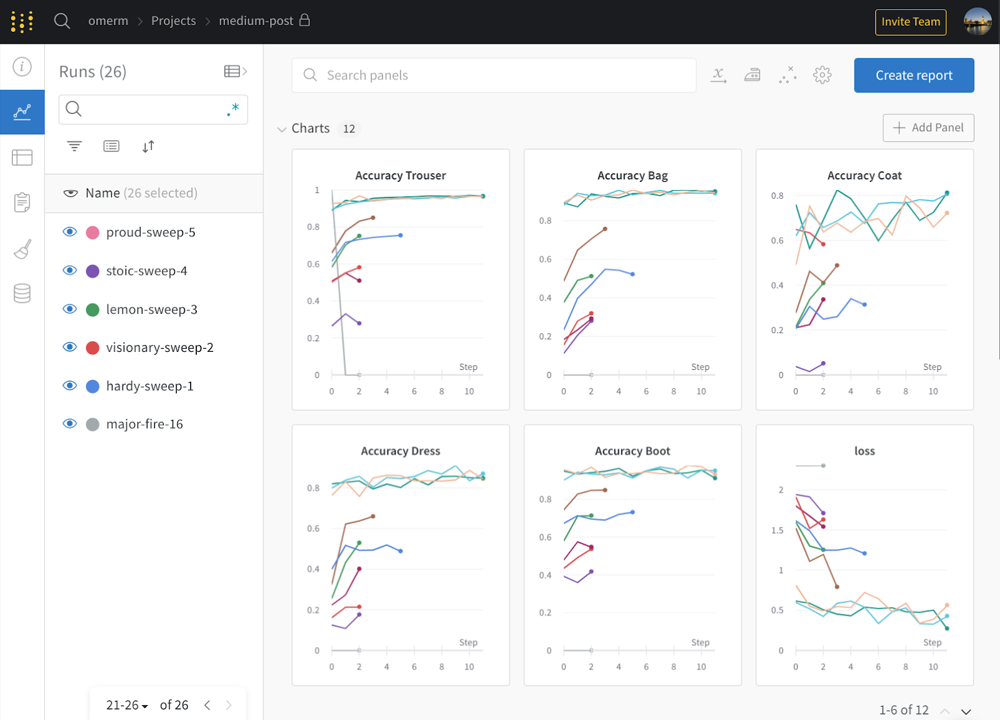
2) Baselines
Reproduzierbarkeit sicherstellen.
2) Baselines
Keine unnötigen Techniken und Komplexitäten anwenden. Reduziere die Fehleranfälligkeit.
2) Baselines
Verwende, falls möglich, eine human baseline. Wie gut kann das Modell überhaupt sein?
Schwierige Fälle
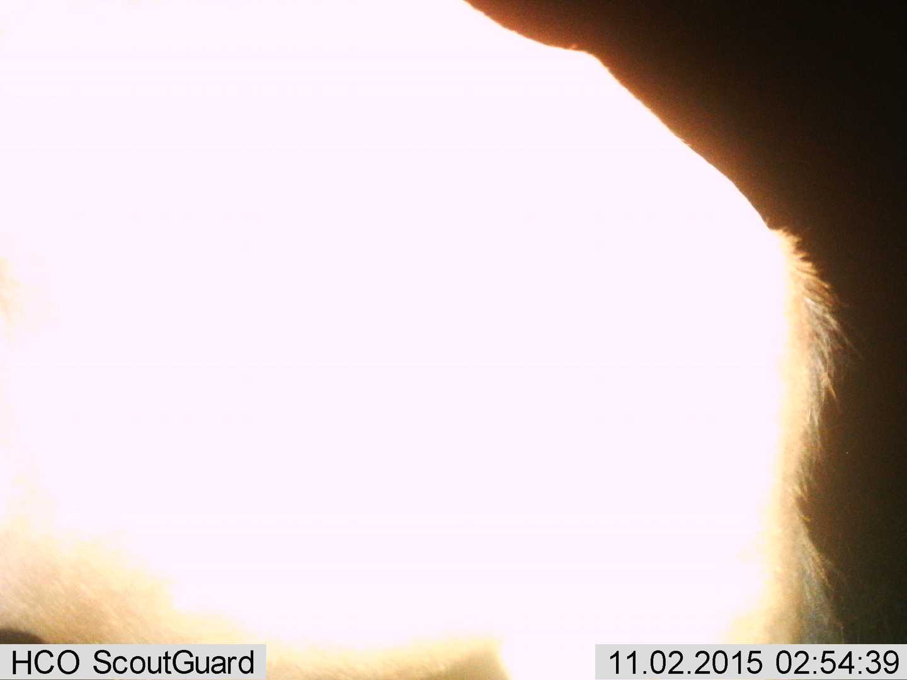Bild einer Kamerafalle das schwierig zu klassifizieren ist. Hier hatten Annotatoren mit Experten eine Übereinstimmung von 96.6%.
2) Baselines
Input-Unabhängige Baseline trainieren. Lernt das Modell überhaupt etwas?
2) Baselines
Das Modell auf einem Batch an Daten overfitten. Funktioniert die Optimierung?
2) Baselines
Visualisieren was in das Modell geht. Funktioniert mein Pre-Processing?
Fixes Sample: Beispiel Segmentierung
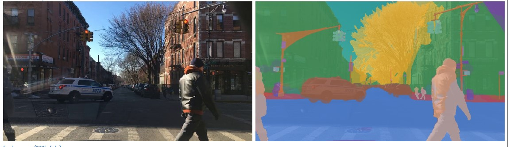
3 - Overfit
3) Overfit
Jetzt sollten ein gutes Verständnis des Datensatzes, ein hohes Vertrauen in die Evaluierungs-Pipeline und erste Baselines von einfachen Modellen vorhanden sein. Nun sucht man ein Modell, das eine möglichst gute Performance auf dem Trainings-Set aufweist.
3) Overfit
Man sucht eine gute Modell-Architektur. Dabei gilt das Prinzip “Don’t be a hero”. Man sollte also bereits implementierte / etablierte Architekturen bevorzugen.
4 - Regularisation
4) Regularisierung
An diesem Punkt sollte man eine gute Performance auf dem Training-Set erreicht haben. Nun kann der Fokus auf das Validation-Set gelegt werden.
4) Regularisierung
Die einfachste Massnahme bessere Performance zu erreichen (und auch Overfitting zu reduzieren) ist das Sammeln von mehr Trainings-Daten. Das ist jedoch oft teuer!
Learning - Curve
Lohnt sich das Sammeln von mehr Daten?
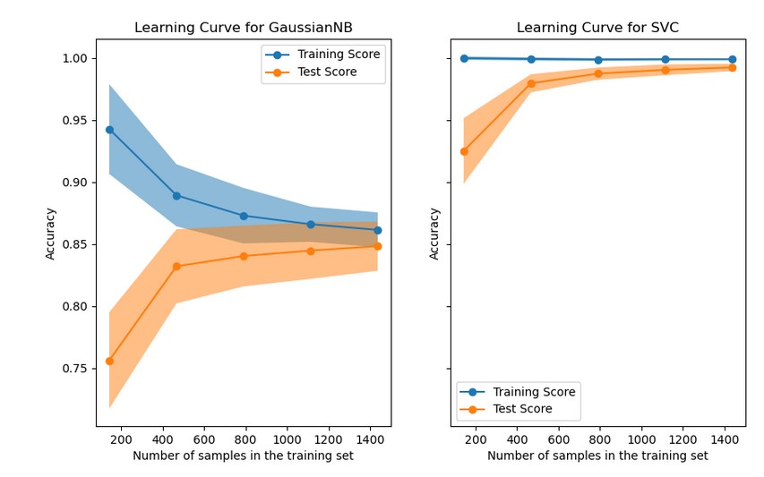Beispiel einer learning curve. X-Achse Performance, Y-Achse die Anzahl Trainings-Samples. Linkes Panel mit Gauissian Naive Bayes und rechtes Panel mit Support Vector Classifier.
4) Regularisierung
Eine andere Möglichkeit ist data augmentation. Dabei werden neue Datenpunkte aus bestehenden generiert, indem man zufällige Änderungen an den Daten vornimmt. Dabei werden Datenpunkte typischerweise on-the-fly augmentiert.
Data Augmentation: Augly
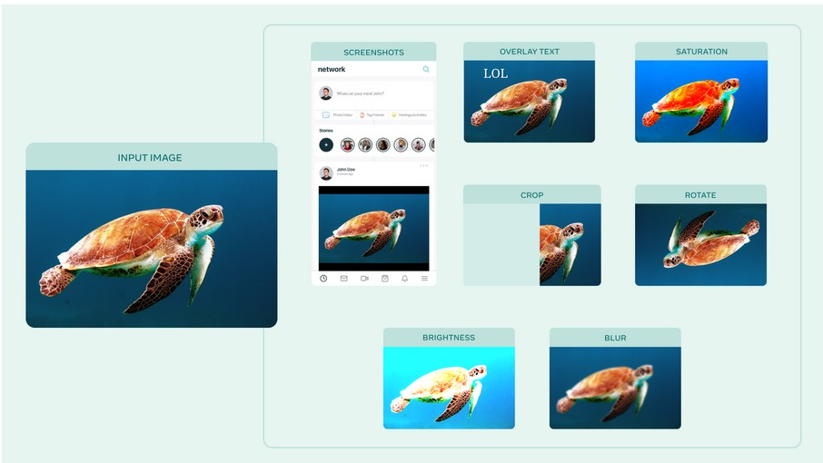
Data Augmentation: Albumentations
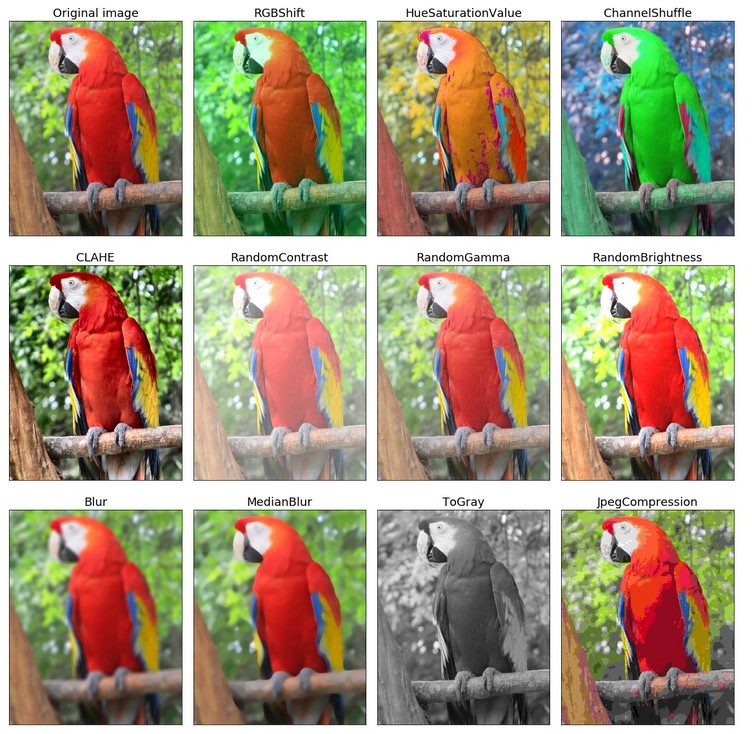Albumentations
Data Augmentation: Kornia

Data Augmentation: Beispiel
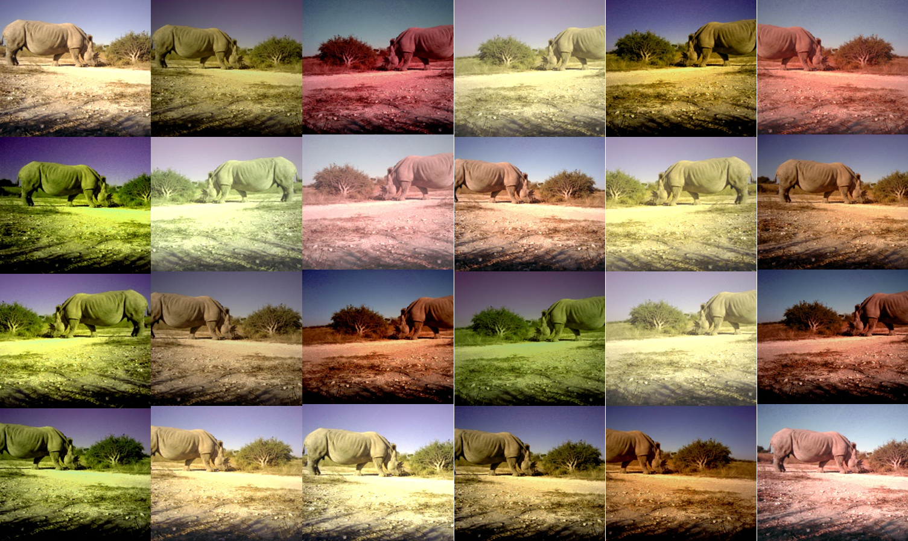
Data Augmentation: Synthetische Daten
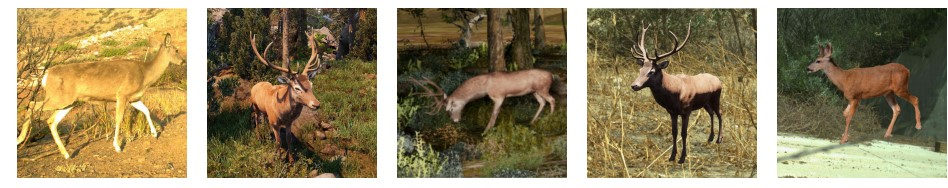
4) Regularisierung
Mit early stopping wird ein Modell trainiert und in periodischen Abständen, z.B. nach jeder Epoche, auf einem Validation-Set evaluiert. Dabei wird das Training abgebrochen, falls nach x Evaluierungs-Zyklen keine nennenswerte Verbesserung mehr erreicht wird.
Early Stopping

4) Regularisierung
Early Stopping in PyTorch.
4) Regularisierung
Mit weight decay kann ein Modell regularisiert werden. Dabei wird der Update-Schritt bei gradient descent modifiziert.
\[\begin{equation} \theta_{t+1} = \theta_t (1 - \lambda) - \eta \nabla J(\theta) \end{equation}\]
Dabei ist \(t\) die Iteration, \(\theta\) die Modell-Parameter, \(\eta\) die learning rate und \(\lambda\) der Decay-Parameter.
4) Regularisierung
Transfer-Learning ist das Adaptieren von einem trainierten Modell, das auf einem grossen Datensatz vortrainiert worden ist (z.B. ImageNet). Bei diesem wird anschliessend der letzte Layer entfernt und entsprechend dem neu zu lernenden Task ersetzt. Anschliessend trainiert man das Netzwerk weiter. Dabei kann man beliebige Layers einfrieren (die Gewichte nicht mehr aktualisieren) oder fine-tunen (die Gewichte weiter trainieren).
Transfer Learning
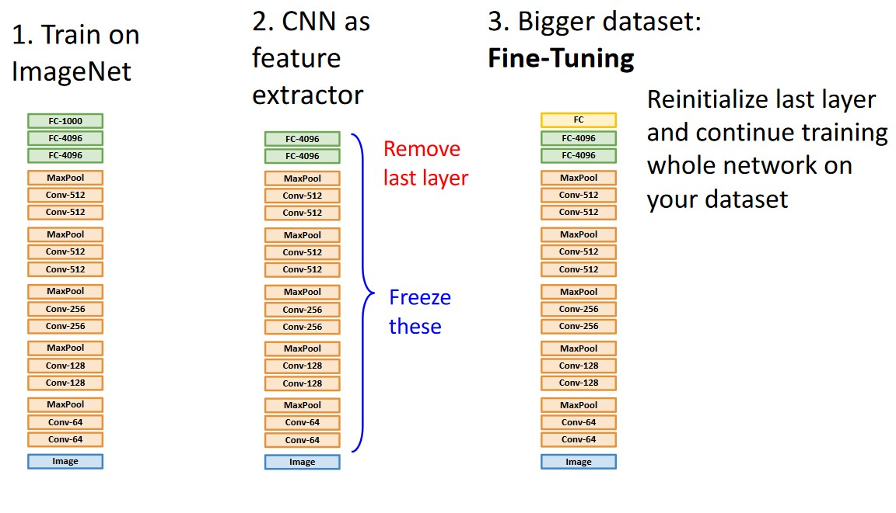
4) Regularisierung
Man kann in PyTorch die Parameter einfrieren:
5 - Tuning
5) Hyper-Parameter Tuning
In diesem Schritt geht es nun darum verschiedene Hyper-Parameter und Architekturen Systematisch zu evaluieren. Dazu gibt es verschiedene Techniken, wie grid-search oder random-search. Wobei random-search zu bevorzugen ist.
5) Hyper-Parameter Tuning
Parametrisierbare Architektur:
class Net(nn.Module):
def __init__(self, l1=120, l2=84):
super(Net, self).__init__()
self.conv1 = nn.Conv2d(3, 6, 5)
self.pool = nn.MaxPool2d(2, 2)
self.conv2 = nn.Conv2d(6, 16, 5)
self.fc1 = nn.Linear(16 * 5 * 5, l1)
self.fc2 = nn.Linear(l1, l2)
self.fc3 = nn.Linear(l2, 10)
def forward(self, x):
x = self.pool(F.relu(self.conv1(x)))
x = self.pool(F.relu(self.conv2(x)))
x = x.view(-1, 16 * 5 * 5)
x = F.relu(self.fc1(x))
x = F.relu(self.fc2(x))
x = self.fc3(x)
return x6 - Squeeze
6) Squeeze out the Juice
Nachdem man die besten Architekturen und Hyper-Parameter gefunden hat gibt es weitere Möglichkeiten noch mehr rauszuholen.
6) Squeeze out the Juice
Model Ensembling.
6) Squeeze out the Juice
Länger trainieren.
Double Descent
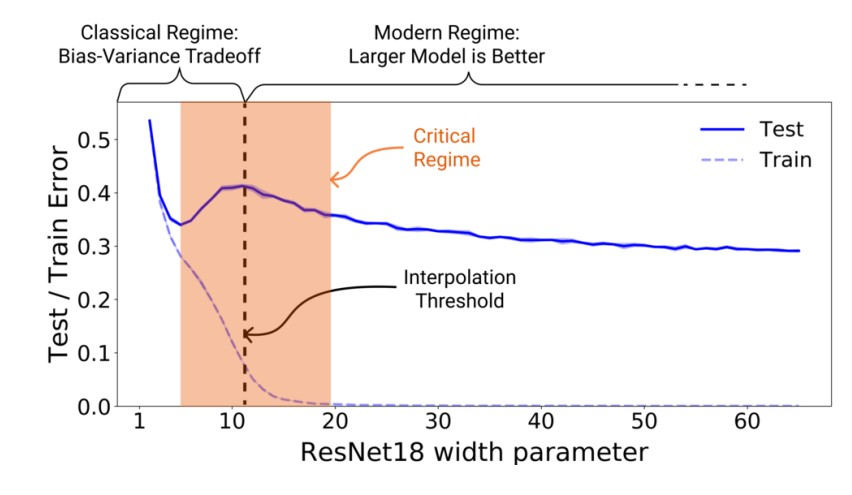Source: Nakkiran et al. (2019)
6) Squeeze out the Juice
Weitere Trainings-Techniken:
- Spezieller Optimiser (AdamW)
- Komplexe Data Augmentation Techniken (Mixup, Cutmix, RandAugment)
- Regularisierungs-Techniken (Stochastic Depth)
- Label Smoothing